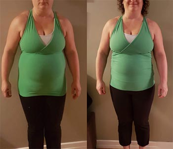

"Diabēta ārstēšanas metodes, kuras izmanto Latvijā, apšaubīja". Slavenais vācu endokrinologs deva godīgu interviju Latvijas ziņu aģentūrai
Tumorzentrum Eva Mayr-Stihl vadītājs Štutgartes Endokrinoloģijas Centrā.
Dr. Klauss Folkers, pasaulslavenās klīnikas Tumorzentrum Eva Mayr-Stihl vadītājs Štutgartes Endokrinoloģijas Centrā.: "Latvijā diabētu ārstē ar novecojušiem pirmās paaudzes preparātiem, tāpēc pacientu skaits pieaug ar katru gadu." Pagājušajā gadā Klauss Folkers apmeklēja Latviju, lai dalītos pieredzē ar saviem latviešu kolēģiem. Viņš apgalvo, ka bizness ir balstīts uz diabētu, nevis uz pacientu ārstēšanu.
Pēc prezentācijas Vācijā doktors Klauss Folkers piekrita sniegt interviju latviešu ziņu aģentūrai, kas neiekaroja pazīstamā ārsta cieņu, cukura diabēta ārstēšanas metožu dēļ, ko pielieto Latvijā.
- Uzstājoties vācu žurnālistu priekšā viņš paziņoja, ka redzētais Latvijā bija absolūti šokējoši. Vai jūs varat to komentēt?
- Es cienu Latviju, latviešu kultūru un latviešu tautu. Bet tas, ko es piedzīvoju, izraisīja šoku starp vācu ārstiem. Mūsu veselības aprūpe seko pilnīgi citiem noteikumiem.
Tātad, ko parasti ārsti nozīmē cukura diabēta ārstēšanai Latvijā? Metformīns, Siofors, Glikofags, Galvus un tamlīdzīgi preparāti.
Pajautājiet jebkuram dakteru skaitam, viens pēc otra viņi jums pateiks, ka šie preparāti NAV zāles pret diabētu. Tās vienkārši nespēj to izdarīt. Šie preparāti ir sen novecojuši.
Viss, ko viņi var darīt, ir samazināt cukura līmeni asinīs uz laiku. Tāpēc, kad preparāta darbība izzūd, glikozes līmenis atkal paaugstinās. Šādas zāles ir jālieto regulāri, Latvijas diabētiķi ir spiesti ar to sadzīvot.
Tomēr glikozes līmeņa svārstības asinīs, kas saistītas ar terapiju, ir ne mazāk bīstamas, kā paaugstināts cukura līmenis. To var apliecināt visi ārsti. Tas nozīmē, ka diabētam var būt nopietnas sekas (problēmas ar redzi, sirdi, reproduktīvās sistēmas traucējumiem, nieru un aknu mazspēja, diabētiskās pēdas, utt.).
Jūs būsiet pārsteigti, uzzinot, ka šī diabēta ārstēšanas metode netiek izmantota Vācijā aptuveni 20 gadus. Uzskaitītie šeit preparāti cukura līmeņa samazināšanai asinīs tiek izmantoti tikai ļoti retos gadījumos, proti, kad ir asa nepieciešamība samazināt glikozes līmeni.
Kāpēc tāda atšķirība? Es varu izskaidrot tikai ar faktu, ka latviešu ārsti vienkārši nav ieinteresēti, lai izārstēt diabētu. Galu galā, mums jāatzīst, ka daudz izdevīgāk ir katru dienu pelnīt uz diabēta, pārdodot zāles, nekā ārstēt slimību.
Cik es zinu, Latvijā cukura diabēta slimniekiem ir pieeja bezmaksas medikamentiem, bet saņemt tos ir ļoti grūti. Kādēļ? Trūkst zāļu Latvijā?
Viņi stāsta par aptieku mafiju televīzijā gandrīz katru nedēļu, bet neko ar to nedara. Latvijā nav viegli būt par diabētiķi! Farmācijas uzņēmumiem ir milzīgs ienākumu avots.
- Un kā veicas ar diabētiķu ārstēšanu Vācijā?
- Vācijā gandrīz visi cilvēki ar cukura diabētu jūtas veseli, un vairāk nekā 60% bijušo pacientu atgriezās pie normāla dzīves veida. Tas ir, viņu gadījumā slimība tika krietni atvieglota. Tas viss ir saistīts ar to, ka mēs pieejam ārstēšanai ļoti atšķirīgi. Protams, mēs runājam par 2. tipa diabētu, pazīstamu arī kā iegūtu vai ar vecumu saistītu problēmu.
Vācu ārsti 2000-o gadu sākumā saprata, ka glikozes līmeni asinīs var normalizēt glikozes sadalīšanas reakcijas palielināšanas ceļā.
Tomēr, kas ir pats ievērojamākais šajā metodē, tad tas ir tas, ka ārstēšanas laikā, aizkuņģa dziedzera funkcija normalizējas, tādējādi gandrīz pilnībā novēršot 2. tipa diabētu. Tas nav ātrs process, tas var ilgt sešus mēnešus vai pat gadu, bet pacients atgūst savu iepriekšējo veselību.
Visi diabēta simptomi ir samazināti, nav nepieciešams pastāvīgi mērīt cukura līmeni asinīs, un nav bažu, ka diabēts sagraus organismu no iekšpuses. Tas var pagarināt dzīvi vismaz par 10-15 gadiem!
Kad es ieraudzīju veselības statistiku Latvijā, es biju šokā. Vai jūs zināt, ka diabēts ir otrais galvenais nāves cēlonis Latvijā pēc sirds un asinsvadu slimībām? Turklāt mirstība bieži sākas agrīnā vecumā, jo 90% no pacientiem nenodzīvo līdz 60 gadiem!
- Vai Latvijā nav produktu, kas spēj normalizēt cukura līmeni asinīs?
- Latvijā, tāpat kā visā Eiropā, ir preparāti 2. tipa cukura diabēta normalizēšanai. Tas ir . Daudzi diabētiķiem jābūt pateicīgiem par savu veselību šim produktam. . gadā izstrādāja pētnieki un zinātnieki. Galvenā šī preparāta sastāvdaļa ir Gymnema sylvestre ekstrakts, kas pakāpeniski samazina cukura līmeni asinīs. Šis līdzeklis ļoti labi ietekmē diabētiķu veselību. Gymnema sylvestre ekstrakts normalizē gremošanas darbību, nomāc apetīti, uzlabo vielmaiņu, novērš aizcietējumus, samazina tūsku un sadedzina kaitīgo holesterīnu. Turklāt, jāņem vērā, ka ir nepieciešams lietot produktu kursa veidā, lai iegūtu pareizu rezultātu.
Papildus iepriekš minētajam komponentam, produkts satur arī ingredientus, kas pakāpeniski pazemina asinsspiedienu. Es neuzskaitīšu visas sastāvdaļas līdzeklī, es minēšu tikai svarīgākās.
|
Parastās opuncijas ekstrakts |
Palīdz izstrādāt insulīnu, izvada taukus no organisma, nostiprina imūno sistēmu, novērš tūskas |
|
Parastās priedes ekstrakts |
Piemīt asinsvadus paplašinoša un urīndzenoša iedarbība, stiprina imunitāti. |
|
Kadiķu ekstrakts |
Veselīgs gremošanas un uroģenitālajai sistēmai. Dziedē brūces un sagriezumus |
|
E Vitamīns |
Labs antioksidants, aizsargā šūnas no oksidācijas un brīvo radikāļu ietekmes, novērš asinsvadu, sirds un acu bojājumus |
Tātad, kā redzat, preparāts sniedz visaptverošu ietekmi uz problēmu.
- Vai ir pieejams Latvijas aptiekās?
- Lieta tāda, ka nē. Turklāt, Latvijas endokrinologi — vismaz tie, kas interesējas par inovatīvām ārstēšanas metodēm — bez šaubām, ir iepazinušies ar Gymnema sylvestre ekstraktu un zina par tā spēju samazināt glikozes līmeni.
Cik es zinu, ražotājs gribēja iziet Latvijas tirgū. Bet viņi nesaņēma atļauju uz to, aizbildinoties uz noteiktu cēloni. Kā jau minēju, šeit neviens nemaksā par diabētiķu ārstēšanu. Šodien farmaceitiskā industrija — tas ir milzīgs bizness! Pat Vācijā. Bet tas darbojas godīgi priekš mums (cilvēki tiešām atveseļojas), bet ne Latvijā!
- Kādu padomu jūs varētu dot latviešu diabētiķiem?
"Protams, parasti cilvēki, jo īpaši tie, kam ir virs 50, cieš daudz vairāk. Bet, par laimi, ir risinājums. Pašlaik tiek izplatīts ar atlaidi starp Latvijas endokrinoloģijas un vielmaiņas sabiedrības endokrinologiem un ir pieejams visiem Latvijas diabētiķiem. Uzņēmuma darbinieki izveidoja ĪPAŠU MĀJAS LAPU, un ražotājs nodrošināja mūs ar nepieciešamo inventāru. Tāpēc ikviens Latvijā tagad var pasūtīt par pazeminātu cenu pa pastu.
Lūk, kas ir jādara, lai iegūtu produktu:
- Apmeklējiet oficiālo mājas lapu un izvietojiet savu pasūtījumu.
- Pēc kāda laika konsultants sazināsies ar jums un atbildēs uz visiem jūsu jautājumiem. Precizēs piegādes adresi
- Jūs varēsiet saņemt savu sūtījumu pēc 5-7 dienām.
Tūkstošiem latviešu diabētiķu jau ir izmantojuši šo iespēju. Visus, kas iesniedza pieteikumu uz , lūdza piedalīties mūsu aptaujā, lai pastāstītu, cik ļoti tas palīdzēja viņiem. Šobrīd aptaujā piedalījās vairāk nekā 2000 cilvēku.
Aptaujas rezultāti:
- mērena cukura līmeņa pazemināšanās asinīs — 99% respondentu;
- visu diabēta simptomu atvieglošanās: slāpes, nogurumu, utt. — 96% respondentu;
- aizkuņģa dziedzera funkcijas uzlabošanās— 92% respondentu
- mērens svara zudums — 98% respondentu;
- nekādas blakusparādības vai atkarības nebija novērotas — 100% respondentu.
- Cik ilgi darbojas atlaide uz produktu?
- Līdz brīdim, kamēr prece būs noliktavā. Tomēr es gribētu jūs brīdināt, ka ir palicis ļoti maz līdzekļu ar atlaidi. Pēdējā laikā tiek veikti arvien vairāk pasūtījumu. Iespējams, Latvijas diabētiķiem kļuva zināms par preparāta augsto efektivitāti salīdzinājumā ar citām parastajām tabletēm, kuras mazina glikozes līmeni.
Es uzskatu, ka ir labākais no eksistējošajiem līdzekļiem priekš diabētiķiem. Un es ieteiktu nepalaist garām iespēju un sākt kursu tuvākajā laikā. Tāpēc es ļoti aicinu visus diabētiķus noformēt pasūtījumu šajā mājas lapā, kamēr tas ir pieejams.
UZMANĪBU: Tagad uz darbojas AKCIJA. Jūs varat saņemt kapsulas no diabēta ar 50% atlaidi. Lai to izdarītu, nepieciešams aizpildīt zemāk līdz (ieskaitot). Akcijas preču skaits ir ierobežots. Uzmanieties no viltojumiem: oriģinālo var iegādāties tikai oficiālajā mājas lapā!
Komentāri
Zane Kaļāne Paldies, ļoti interesanti. Es pasūtīju . Tālruņa konsultants teica, ka to ir palicis ļoti maz. Tāpēc tam, kurš vēlas veikt pasūtījumu, ir tas jāizdara pēc iespējas ātrāk!
Ērika Freiberga Un kur jūs pasūtījāt ?
Aivars Hartmanis Jūs vispār lasījāt interviju? Tur taču viss rakstīts) Lūk saite.
Viktors Nēvs Es esmu viens no tiem, kas jau ir paspējis izmēģināja līdzekli. Mans cukurs tagad ir normā. Slāpes un reibonis samazinājās. Es mērīju savu cukura līmeni asinīs katru dienu pēc izveseļošanās — tas nepaaugstinājās. Pagājuši 2 mēneši kopš terapijas. Es jūtos vesels. Iesaku visiem.
Pēters Ķirsis Paldies. Interesanti. Es izlasīju lapā par . Pārsteidzoši.
Kristīne Slišāne Es veicu pasūtījumu. Man teica saņemt to pastā pēc 5 dienām. Es tiešām ceru. Es jau daudzus gadus ciešu no šīs problēmas. Es nezinu kāpēc, es vēl neesmu vecs.
Marija Neizaka Es saņēmu šo līdzekli vakar. Līdz pēdējam es nevarēju noticēt, ka tas patiešām ir efektīvi. Es domāju, ka tā ir afēra. Bet es jau sāku lietot, un patiesībā viss, kas ir rakstīts par to, ir taisnība. Palīdz.
Skūpste Ilona Sveiki visiem. Man ir 59 gadi. Es notievēju par 6 kg. Glikozes līmenis bija no 8 līdz 12. Tagad 6.0. Es pieņēmu 2 mēnešu laikā. Esmu vairāk nekā apmierināta ar rezultātu. 
Krista Liģere Satriecošs rezultāts!
Aiga Sproģe Tas, kas rakstīts par Latvijas ārstiem, ir ļoti precīzs apgalvojums. Viņiem vienkārši ir vajadzīga mūsu nauda! Viņi nesniedz bezmaksas zāles, uz aptieku plauktiem, protams, ir daudz kas. Nopērc, tad būs, kas būs. Pilnīga vienaldzība. Neviens nerūpējas par diabētiķiem. Žēl, ka man nav iespējas pārcelties uz Vāciju. Paldies par informāciju.
Artūrs Kairis Diabēts ir ļoti viltīga slimība. Es ciešu no tā jau 4 gadus, man nav ārēju simptomu, tikai dažreiz sausums mutē. Lūk, kāpēc es neaizdomājos par nepieciešamību amputēt kājas un visu pārējo. Bet es nesen zaudēju samaņu. Mani nogādāja slimnīcā, kur apskatīja un veica diagnostiku. Rezultāts izrādījās ļoti slikts. Izrādījās, ka manas nieres bija briesmīgā stāvoklī, manas vēnas bija tik nolietotas, ka ārsti bija šokā. Tā ka vajag steidzami kaut ko darīt. Esmu dzirdējis daudz laba par , bet es nezināju, kur to pasūtīt. Tagad zinu. Paldies!
Pauls Vilnis Tas tiešām ir lielisks līdzeklis! Es dzeru jau otro mēnesi. Es nejutos tik labi jau ilgu laiku. Pēc izārstēšanās mans cukurs bija kārtībā.
Katrolīna Greivule Man arī ir pieredze ar . Es paņēmu viņu 4 mēnešus atpakaļ (atveda mana meita). Problēma nija jau nopietnā stadijā, mani rezultāti bija ļoti slikti. izrādījās labs!
Valdis Mors Es pasūtīju tieši no oficiālās mājas lapas. Tagad es esmu vesels cilvēks — nu jau 1,5 gadu. No visām zālēm, ko es lietoju (es to saku kā pieredzējis diabētiķis), ir labākais. Pērciet, nedomājot, tas glābs jūs no komplikācijām!
Anna Vugule Es pasūtīju . Es dzīvoju Madonā, bet man solīja, ka es saņemšu to pēc nedēļas. Gaidu ar nepacietību.
Santa Trona Mana meitene man pastāstīja par šo metodi. Viņa dzīvo Dānijā. To izmanto arī tur. Bet ne tikai tur, bet arī citās Eiropas valstīs. Pie mums, kā vienmēr, ir daudz korupcijas, un zāles, kas tiešām palīdz, nepārdodas ...
Raivo Gulbis Wow, es vēl varu pasūtīt. Es izmantošu to. Diabēts var būt nāvējošs, ja to neārstēt
Normunds Gailītis Man patika . Es pieņemu mēneša laikā. Strādā.
Doties uz oficiālo mājas lapu